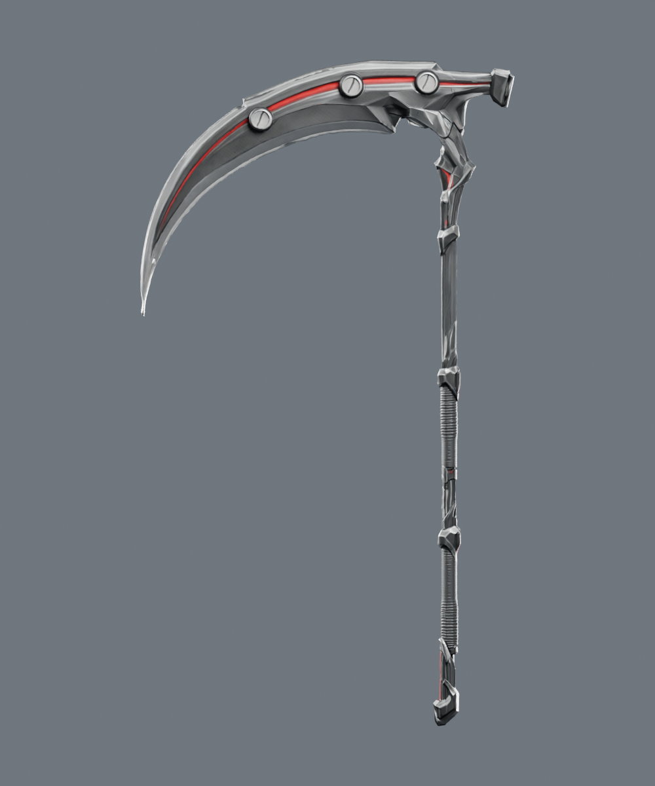
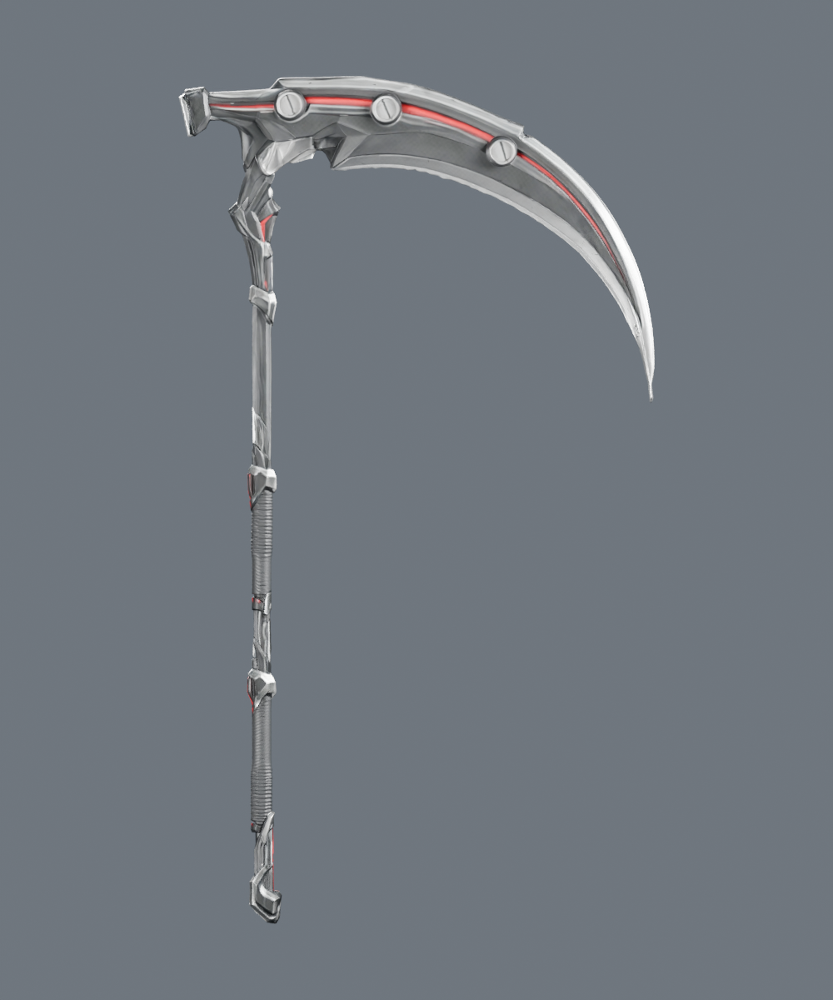
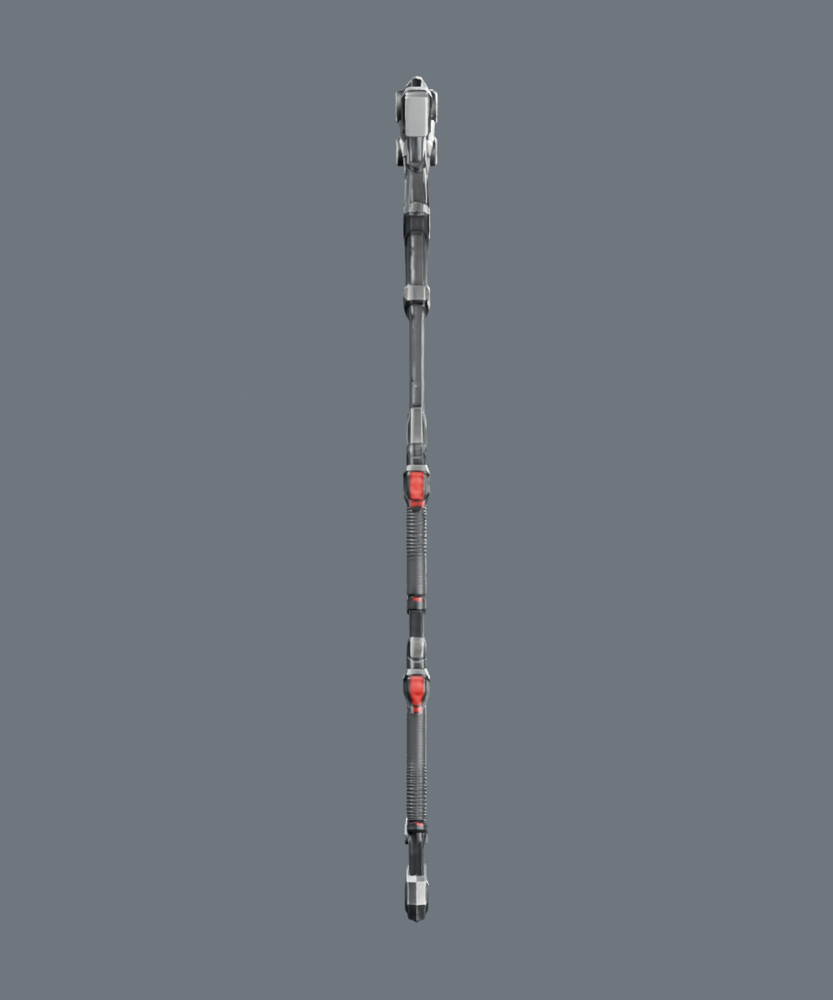
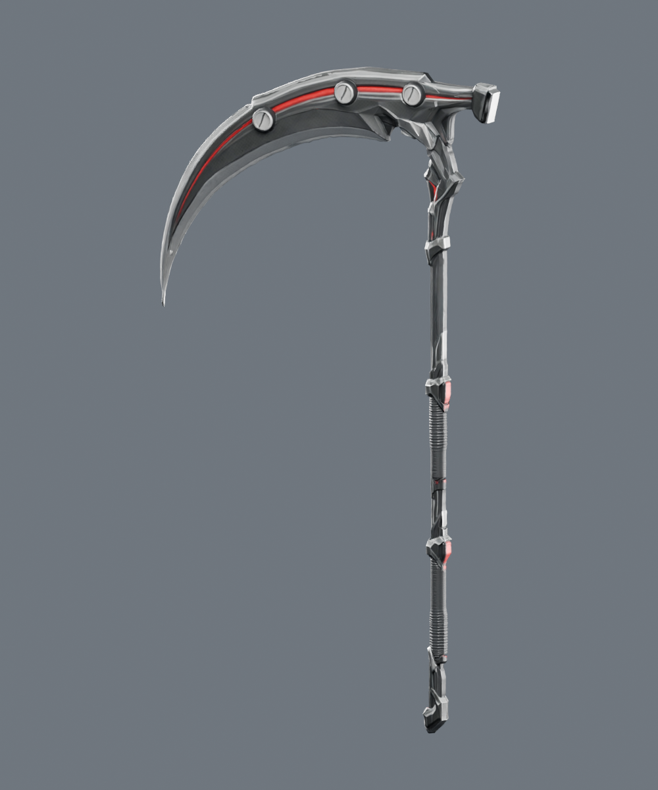

14,000 삼각형 · 1재질 · 2K baseColor / metallicRoughness / normal · 약 11.6MB · 1.905m · 양손 그립과 날 방향 교정.
아인 장착·동작 확인외형에서 적선 낫 선택GLB 다운로드




외형 선택은 아인의 로비·솔로 던전에 적용되며 능력치·재화·장비 소유권은 바꾸지 않습니다. 온라인 파티에는 아직 적용하지 않습니다. 기존 낫을 선택하면 원래 외형으로 돌아갑니다.
남은 검수: S25 Ultra 실기기 성능, 전 동작의 손가락 관통, 판매용 확대 품질 승인. Hi3D 원본과 이전 제작본은 별도 보관했습니다.